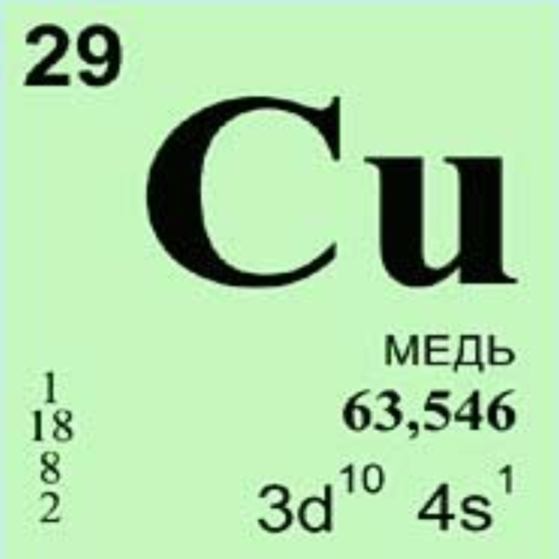

 Медь (Cu от лат. Cuprum) — элемент одиннадцатой группы четвёртого периода (побочной подгруппы первой группы) периодической системы химических элементов Д. И. Менделеева, с атомным номером 29. Простое вещество медь — это пластичный переходный металл золотисто-розового цвета (розового цвета при отсутствии оксидной плёнки). C давних пор широко используется человеком.
История Меди
Медь — один из первых металлов, хорошо освоенных человеком из-за доступности для получения из руды и малой температуры плавления. Этот металл встречается в природе в самородном виде чаще, чем золото, серебро и железо. Одни из самых древних изделий из меди, а также шлак — свидетельство выплавки её из руд — найдены на территории Турции, при раскопках поселения Чатал-Гююк. Медный век, когда значительное распространение получили медные предметы, следует во всемирной истории за каменным веком. Экспериментальные исследования С. А. Семёнова с сотрудниками показали, что, несмотря на мягкость меди, медные орудия труда по сравнению с каменными дают значительный выигрыш в скорости рубки, строгания, сверления и распилки древесины, а на обработку кости затрачивается примерно такое же время, как для каменных орудий.
В древности медь применялась также в виде сплава с оловом — бронзы — для изготовления оружия и т. п., бронзовый век пришёл на смену медному. Сплав меди с оловом (бронзу) получили впервые за 3000 лет до н. э. на Ближнем Востоке. Бронза привлекала людей прочностью и хорошей ковкостью, что делало её пригодной для изготовления орудий труда и охоты, посуды, украшений. Все эти предметы находят в археологических раскопах. На смену бронзовому веку относительно орудий труда пришёл железный век.
Первоначально медь добывали из малахитовой руды, а не из сульфидной, так как она не требует предварительного обжига. Для этого смесь руды и угля помещали в глиняный сосуд, сосуд ставили в небольшую яму, а смесь поджигали.
На Кипре уже в 3 тысячелетии до нашей эры существовали медные рудники и производилась выплавка меди.
На территории России и сопредельных стран медные рудники появились за два тысячелетия до н. э. Остатки их находят на Урале (наиболее известное месторождение — Каргалы), в Закавказье, в Сибири, на Алтае, на территории Украины.
В XIII—XIV вв. освоили промышленную выплавку меди. В Москве в XV в. был основан Пушечный двор, где отливали из бронзы орудия разных калибров. Много меди шло на изготовление колоколов. Из бронзы были отлиты такие произведения литейного искусства, как Царь-пушка (1586 г.), Царь-колокол (1735 г.), Медный всадник (1782 г.), в Японии была отлита статуя Большого Будды (храм Тодай-дзи) (752 г.).
С открытием электричества в XVIII—XIX вв. большие объёмы меди стали идти на производство проводов и других связанных с ним изделий. И хотя в XX в. провода часто стали делать из алюминия, медь не потеряла значения в электротехнике.